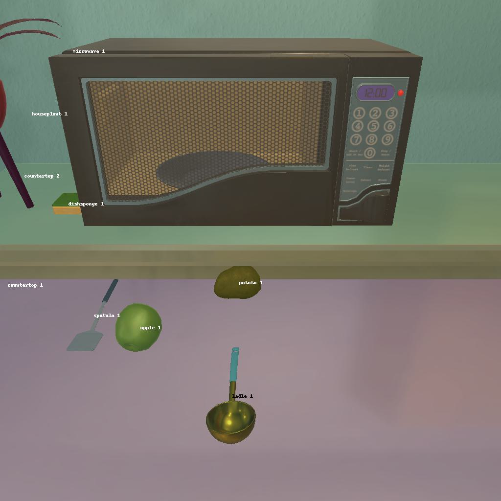

---------------------------------------------------------task: 20---------------------------------------------------------
--------------------------------------------------------------------------------------------------------------------------------------------------------------------
--------------------------------------------------------------------------------------------------------------------------------------------------------------------
Step:--------------------------------------------------------------------------3-------------------------------------------------------------------------------
----------------------------------------
VLM Prompt:
Image1:
Image2:
Image3:
**Instruction**
1. Analyze the provided image to identify all visible household objects, focusing on those relevant to the task description "put a hot apple in garbagecan."
2. Use the analysis of the image and the task hint "The agent must find an object of the desired type, pick it up, go to a microwave, heat the object with the microwave, then find the correct location to place it, and put it down there. The agent does not need to use the microwave button or open the microwave to heat the object, and the agent just needs to do action that is "heat the object with the microwave"." to answer the question: what is the most reasonable action in the choices for the task description "put a hot apple in garbagecan"?
4. Decide and write the answer using the template: The answer is: (i): , where i is the real number. If there is no desired object in the image, search every place based on **Initial Observation** to find the object. And if no one is exactly correct, choose a similar answer.
**Initial Observation**
You are in the middle of a room. Looking quickly around you, you can see cabinet (1-18), countertop (1-4), sink (1), drawer (1-7), sinkbasin (1), coffeemachine (1), microwave (1), garbagecan (1), stoveburner (1-4), toaster (1), fridge (1)
**Answer Choices**
(1): go to cabinet 1
(2): go to cabinet 2
(3): go to cabinet 3
(4): go to cabinet 4
(5): go to cabinet 5
(6): go to sink 1
(7): go to cabinet 6
(8): go to drawer 1
(9): go to drawer 2
(10): go to sinkbasin 1
(11): go to cabinet 7
(12): go to cabinet 8
(13): go to coffeemachine 1
(14): go to cabinet 9
(15): go to countertop 2
(16): go to cabinet 10
(17): go to drawer 3
(18): go to drawer 4
(19): go to drawer 5
(20): go to cabinet 11
(21): go to cabinet 12
(22): go to cabinet 13
(23): go to cabinet 14
(24): go to stoveburner 1
(25): go to countertop 3
(26): go to stoveburner 2
(27): go to stoveburner 3
(28): go to stoveburner 4
(29): go to drawer 6
(30): go to cabinet 15
(31): go to cabinet 16
(32): go to cabinet 17
(33): go to cabinet 18
(34): go to toaster 1
(35): go to drawer 7
(36): go to countertop 4
(37): go to fridge 1
(38): take peppershaker 1 from countertop 1
(39): examine countertop 1
**Answer**
Let's think step by step by following the instructions.
----------------------------------------
----------------------------------------
Original Response:
First, we need to find an apple. From the initial observation, we know there should be an apple somewhere in the room. Looking at the provided images, we can see an apple on the countertop 1 in Image1.
Next, we need to heat the apple with the microwave. The microwave is also visible in Image1.
Lastly, we need to put the hot apple in the garbagecan. In Image2, we see the garbagecan.
Since the apple and microwave are on countertop 1, and we do not need to interact with the microwave other than performing the action of heating the object, the most reasonable action from the given choices would be to first take the apple.
The answer is: (38): take peppershaker 1 from countertop 1
However, the action mentions taking the peppershaker, not the apple, which seems to be a mistake in the answer choices. If we consider the task of heating the apple and then putting it in the garbagecan, we would expect an action like "take apple from countertop 1." Since this option is not available and the peppershaker is not relevant to our task, we will choose the action that involves the location where the apple is found.
The answer is: (39): examine countertop 1
This action will bring the agent closer to the apple, which is the object we need for our task.
----------------------------------------
----------------------------------------
>>> Refine Original VLM Response and Get Pure Action: take peppershaker 1 from countertop 1
However, the action mentions taking the peppershaker, not the apple, which seems to be a mistake in the answer choices
----------------------------------------
-----------------------------------------------------------------
Running time: 12.350151300430298 seconds
Total Money: 12.578790000000003
-----------------------------------------------------------------
-----------------------------------------------------------------
Text Observation:You pick up the peppershaker 1 from the answer choices.
-----------------------------------------------------------------
UNSUCCEED